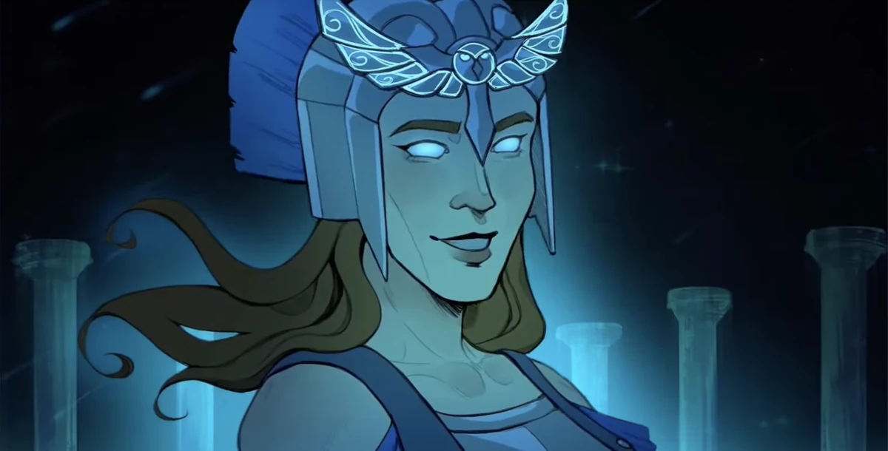

| Athene | |
|---|---|
|  | |
| Zeichnung von Luiza Xavier Mazzei | |
| Biografie | |
| Titel | Göttin der Weisheit |
| Meisterin des Krieges | |
| Beruf | Griechische Göttin |
| Göttin der Weisheit und Kriesstrategien | |
| Zugehörigkeit | Odysseus |
| Telemachos | |
| Die Olympioniken | |
| Familie | Zeus (Vater) |
| Ares (Bruder) | |
| Hephaistos (Bruder) | |
| Apollon (Bruder) | |
| Hermes (Bruder) | |
| Die anderen Olympioniken | |
| Status | Unsterblich |
| Hinter den Kulissen | |
| Auftritte | Troja Saga |
| Zyklopen Saga | |
| Weisheits Saga | |
| Ithaka Saga | |
| Original Stimme | Teagan Earley |
| Deutsche Stimme | Dalina Schwarz noch nicht sicher |
Athene
Lass uns den Hund was lehren, vor seiner ganzen Art - Athene (Kleiner Wolf)
Athene ist die Göttin der Weisheit und der Kriesstrategien. Sie ist die Tochter von Zeus, ehemalige Mentorin von Odysseus und Freund von Telemachos. Sie dient als eine der Protagonistinen in der Weisheits Saga.
Biografie
Akt 1
In Krieger des Verstands, wo Athene ihr Debut feiert, erzählt
sie die Geschichte, wie sie Odysseus getroffen hat. Als Odysseus ein Junge war, hat sie ihm eine challenge in
Form eines magischen Wildschweines, das nur der geschickteste Krieger töten könne, gestellt. Der junge Odysseus
tötet das Wildschwein erfolgreich, in dem er es überlistete. Im Glauben ihn lehren zu können, kam Athene zu ihm
und bot an seine Mentorin zu sein. Er stimmt zu und sie trainieren zusammen.
Als Odysseus später Zweifel zeigt, nachdem Polites ihm seine Philosophie der „offenen Arme“ mitgeteilt hat,
sagt sie ihm, er solle nichts falsch machen.
In der Zyklopen Saga, Odysseus macht etwas falsch und entäuscht sie, als
er nicht nur Poliphemus verschohnte, sondern auch seinen Namen und Zuhause dem Zyklopen verriet. Die zwei
streiten in Mein Lebwohl, und Odysseus behauptet, sie sei allein. Die
beiden trennen dann ihre Wege und treffen sich 10 Jahre nicht mehr.
Akt 2
In der Weisheits Saga freundet sie sich mit Telemachos, dem Sohn von
Odysseus, an, als sie versucht, ihm im Kampf gegen Antinoos zu helfen. Nachdem sie mit Telemachos gesprochen hat
(Uns wird's gut geh'n), erkennt sie, was sie tun muss, und taucht in
Odysseus’ Erinnerungen ein. Dort sieht sie alle Ereignisse, die nach ihrem Abschied geschehen sind, von der
Ozean Saga bis zur Donner Saga. Als sie
erfährt, dass Odysseus auf Kalypsos Insel gefangen gehalten wird, steigt sie zum Olymp hinauf und bittet Zeus,
ihn freizulassen. Zeus willigt ein, Odysseus gehen zu lassen, wenn Athene sein „Spiel“ gewinnt und fünf
ausgewählte Olympier davon überzeugt, dass Odysseus freigelassen werden sollte. Er ruft Apollon, Hephaistos,
Aphrodite, Ares und Hera herbei – allesamt überzeugt Athene relativ schnell von ihrer Sache. Ihr Erfolg erzürnt
Zeus, sodass er in Wut gerät und Athene mit mehreren Blitzen angreift.
Nachdem sie sich von ihren Verletzungen erholt hat, hilft sie Telemachos, sich als ihr neuer Krieger des
Verstands auszubilden. Während der Auseinandersetzung mit den Freiern steht sie Telemachos bei. Am Ende von
Ich kann mich nur Fragen erscheint sie Odysseus und fragt
sich, wie die Welt wohl wäre, wenn die Menschen mehr Mitgefühl hätten. Sie gesteht, dass sie sich schuldig
fühlt, ihn und andere so grausam gelehrt zu haben. Odysseus, möglicherweise berührt von ihrem Sinneswandel,
erklärt, dass er eine solche Welt zu seinen Lebzeiten nicht erleben wird. Allerdings sagt er, dass Athene es
versuchen könne, da sie unsterblich sei, während er zu Penelope zurückkehren müsse. Athene versteht und
respektiert seine Entscheidung und lässt ihn ziehen, um seine Frau wiederzusehen.
Fähigkeiten
-
Geistesblitz
- Athene kann Menschen in die Geistesblitz Dimension, in der sie sich blitzschnell mental kommunizieren können.
- Benutz in:
-
Projektion
- Athene neigt dazu, Projektion gemeinsam mit Geistesblitz zu benutzen. So kann sie Projektionen von ihrselbst irgenwo hin senden oder sich selbst ummanteln um unsichtbar zu werden.
- Benutz in:
-
Zeit Sprung
- Der Zeit Sprung erlaubt Athene von der Geistesblitz Sanduhr zu springen und die Erinnerungen des Ziels zu sehen.
- Benutz in:
Auftritte
-
Troja Saga
- Krieger des Verstands (Debut)
- Zyklopen Saga
-
Weisheits Saga
- Krieger des Verstands (Debut)
-
Troja Saga
- Krieger des Verstands (Debut)